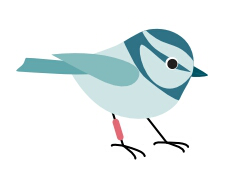
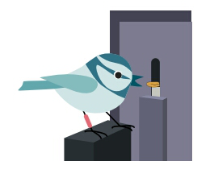
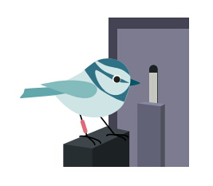
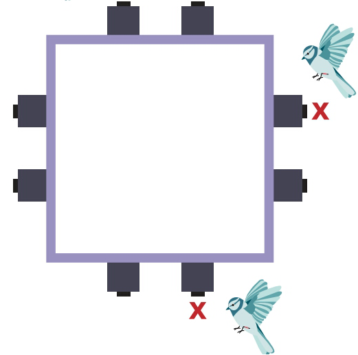

冬季，鸟儿必须记住它们藏了成千上万颗种子的地方。生物学家弗拉迪米尔·普拉沃苏多夫解释说这能教会我们大脑是如何进化的。
尽管不到半盎司重，但山鸡能够在气温低于零度，狂风呼啸，下着大雪的严寒冬天生存下来。它们是怎么做到的？在秋天的时候，它们隐藏了多达8万颗种子，然后它们在冬天通过记忆找回了这些种子。他们惊人地追踪许多地点的能力，使他们的记忆力成为在动物王国中最令人印象深刻的。
这也使山雀成为对于动物行为学研究者来说一个有趣的话题。雷诺内华达大学的认知生态学家弗拉迪米尔·普拉沃苏多夫致力于研究这种既小又坚韧不拔的鸟儿的惊人记忆。2013年在“生态、进化和系统学年度评论”中撰写了关于食物储藏的认知生态学的文章，他和他的合著者蒂莫西·罗斯认为，关于认知进化的重大问题的答案可能在这些小鸟的大脑里。
7月份，在芝加哥举行的动物行为协会会议上，普拉沃索多夫介绍了他的团队对生活在内华达山脉的野生山雀的最新研究。他和他的研究生们能够在很短的时间内证明一只鸟的空间记忆对它的生存有着直接影响。研究小组通过建立一个实验装置，利用射频识别技术(RFID)和电子腿去测试鸟类在野外的记忆，然后追踪它们的寿命。研究人员发现记忆力最好的鸟类最有可能在冬天存活下来。《知识杂志》对普拉沃索多夫说，他的研究意味着我们对记忆和认知的理解，这段对话已经经过了长度和清晰度的编辑。
有什么点子推动对山雀的研究？
判断有些物种是聪明的或不聪明的，问题是：为什么？像我这样的认知生态学家正试图弄清楚哪些生态因素可能影响了这些不同认知的进化。换句话说，所谓的点子就是去理解认知变化的生态学和进化原因。
很多经典的认知生态学领域的经典工作都指向了为什么有些物种有更强的大脑，尤其是大脑中称为海马体的区域。在我的实验室里，我们研究的是空间记忆，空间记忆众所周知是与海马体相连的。所以我们一直在研究海马体的大小、神经元的数量、神经元大小的变动以及它是如何与记忆的变化联系在一起的。
你为什么选择研究山雀？
我们使用会储存食物的鸟类，因为它们就像记忆机器-它们在很大程度上依赖于记忆，所以它们是这类事物的一个很好的模型。另一些人则研究了雌雄寄生的牛鸟之间的差异，因为雌鸟必须对许多其他种类的巢穴进行寻找和监测，来将它们的蛋产下，这是一个相当重大且以记忆力为基础的任务。人们还研究了一雌一雄的田鼠之间的差异，在这种情况下，雄性有多个配偶和更大的领地；雌性有着更好的记忆和更大的海马体。
在今年的会议上，认知生态学研究很受欢迎。这是个目前迅速发展的领域吗？
我是这么想的。它最初是从比较多个物种开始的，在某些方面是好的，但在另一些方面则不太奏效。我认为这在很大程度上是因为当你比较不同物种时，它们之间有很多的差异，这些差异不仅仅是认知。当你测试他们时，所有的这些差异都会决定他们如何去表现。例如， 物种对于监禁的反应有很大的不同。所有的动物都以某种方式进化而来，当你把不同物种带到实验室并把它们都放在白色的房间里时，即使是联系很近的物种也会对这个房间做出不同反应，这使得我们很难知道哪些不同行为是由认知差异造成的。
我决定，为了解决这个问题，需要考虑同一物种的种群之间的差异。一旦你考虑同一个物种，至少会比较更多的相似点，让我们来分析一下，松鸡和山雀。所以我们开始在实验室里比较阿拉斯加的山雀和科罗拉多的山雀。想法是，在阿拉斯加，冬天真的很冷，但在科罗拉多州，天气比较温和，山雀们不需要太多的食物储存，这样它们的记忆力就不需要那么好了。果然，我们在这两个种群之间发现了巨大的不同：阿拉斯加的山雀有着更好的记忆，更大的海马体和更多的神经元。
你的演讲吸引了一大群人。你能解释一下为什么每个人都这么感兴趣吗？
比较研究仍然没有直接显示认知差异是如何发生的。他们表明，每个人都认为这是自然选择，但没有人能展示出来。人们尝试在实验室里测试鸟类，然后释放他们，看看他们的认知差异如何影响他们的生存，但这是行不通的。所以多年前各种各样的力量促使我进入这个领域。其中的一部分力量是建立具有射频识别能力的仪器，这样我们就可以在野外测试他们的认知能力。我们还可以追踪山雀的生存和繁殖，以及它们与谁交配。
在野外测试山雀的记忆力
一系列的补给站被用来评估单个山雀回忆的力量
①腿带
成百上千的小山雀被绑上了独特的电子标签

②种子投放
在这所有的八个打开装置中，只有一个会对每个鸟儿的ID标签做出回应

③无种子
其他的供给装置不会为这只鸟开放

④学习和记忆
通过对这些供给装置进行尝试，鸟儿们知道了哪个装置会为自己运送种子，每个鸟儿进来哪个装置会被记录下来。

科学家们设计了一个由八个电子喂食站组成的阵列，可以悬挂在山雀的自然栖息地的树木之间。此阵列使用科技来识别和记录由鸟儿产生的每一次访问。日志揭示了每只鸟都能很好地记住这八个站中的哪一个来响应它的ID标签并产生一个种子。记忆力最好的鸟直接回到为它们打开的站点。记忆力差的鸟在降落到正确的站点之前，可能必须先到一个或多个站点。
我在会上介绍的工作主要是在它们的第一年里对年幼山雀进行仔细的观察，看看是否自然选择影响认知。如果是这样的话，我们希望看到那些在认知测试有好的表现和良好空间记忆的鸟类，就更有可能度过第一个冬天，而那些做得更糟糕的则更有可能死去。这就是我们发现的。我们在第一时间直接证实每个人都怀疑的东西-是的，看起来就像是空间认知是由自然选择直接作用的。
我们还比较了生活在西拉山脉海拔越高和越低的山雀。在海拔高时，几乎70%的幼年山雀每年都会在第一个冬天死亡。太多了！不过，如果你对选择感兴趣，那就太好了。如果更多的动物正在死亡，有些动物有更好生存的理由，那么，在那里你能看到选择的结果：那些幸存下来的动物将会繁衍后代，它们的后代应具备更好地在艰苦条件生存的能力。
因此，在高海拔地区，我们已经知道鸟类藏匿的食物明显多于生活在较低海拔的鸟类隐藏的食物。且它们也显示出更多的空间认知能力，它们有更大的海马体、更多的神经元、更大的神经元和更多的新生神经元。两群体之间的差异令人吃惊-这是非常大的。
现在我们还发现，在高海拔地区，幼年山雀的死亡率更高。但对于在海拔较高处的成年山雀来说，情况并非如此：对于那些设法生存下来的山雀来说，在条件比较温和的海拔较低地区，幼年山雀比成年山雀死亡率低。所以换句话说，如果他们有认知特征，在更高的海拔处通过艰难的选择，并在它们第一年冬天的生活中生存下来,它们可以活得更久。尽管在这些海拔较高处疯狂的下了一场雪-我们说的是20到25英尺的雪。
认知中的差异不仅仅是影响生存吗？
是的，我们也证明了雌性和雄性交配时，记忆能力更强的雌性会有更大的优势并产更大的卵。现在我们想知道这是为什么？这并不是因为这些雄性动物能够为幼仔提供更多的食物，而是因为它们不使用储藏的食物来喂养幼仔。(在春天，成年山雀和青年山雀都吃昆虫。) 而雄性动物似乎没有利用它们极好的记忆来繁衍后代，它们的记忆力很好，因为他们需要记起这成千上万个食物储存地。就繁殖而言，记忆优势没有发挥出来-有点像使用空间技术把黄油放在你的三明治上。
因此，储藏对生存来说是必不可少，但是不会对繁殖产生影响，对记忆力的要求要低得多，任何一个个体在记忆方面的差异对于冬天的生存都是至关重要的。
我们可以想到解释的唯一方式是它可以作为对未来的投资：女性的记忆更好是因为她们的后代更有可能存活下来。因为它们拥有基因，这将允许那些后代拥有更好的记忆力。我们现在正在研究一个大问题，雌性是如何知道哪些雄性有更好的记忆力。这可能是因为它们可以观察雄性动物取回储存物。但我们认为一个更合理的潜在解释是，认知的变化在某种程度上是由雄性的歌声质量或某种其他特征所指示的，可能是羽毛。
你所学到的关于山雀的知识，能教会我们记忆和认知吗？
我认为它可以解释，记忆是如何在多个物种之间进化的，为什么有些物种的记忆力可能更强，而有些物种的记忆力更差，随着时间的推移，这种情况会如何改变，及为什么会改变。更进一步，我们也在研究遗传学，目前，我们正在与科罗拉多博尔德大学的斯科特·泰勒合作，对山雀基因组进行测序。我们已经对40个鸟儿的基因组进行了测序，其中20个来自高海拔地区，20个来自低海拔地区。从每个海拔，我们选择了在记忆测试中表现最好和最差的鸟类。现在我们想看看遗传差异对这些记忆差异的贡献。
那么，我们的RFID设备，可以在野外测试空间记忆，并且可以随着时间的推移跟踪它们的表现。因此，假设我们可以研究老化和衰老这样的东西，我认为，比任何实验室研究都要好。因为一旦你在实验室里得到一只动物，它就不会过一种自然的生活，即使它是一只老鼠。老鼠不会自然地生活在一个小小的塑料浴缸里，他们生活在一个更加复杂的环境中。野生鸟类也是如此，如果你把野生鸟类带进实验室，它们可能会没事，但它们的感觉不一样。
如果我们对野生动物的一生进行跟踪和测试，我们可能有更好的机会发现和研究衰老。我们可以测试两个紧密相关的物种，比如我们的小山雀和大山雀，大山雀不储藏食物，因此可能不需要专门的空间记忆力。如果我们发现大山雀认知能力在三年后就开始下降，而我们的小山雀可能在七岁时开始衰退。然后，我们可以问一些非常有趣的问题，这两个物种的年龄为何有如此大的不同，以及山雀是如何将它们的记忆保存得如此之久。它可能会让我们更好地理解像阿尔茨海默氏症这样的事情。我可能自己做不到这部分，但是有人可能会这样做。
贝特西·梅森是旧金山湾区的一名自由职业记者，专门从事科学和制图工作。她和格雷格·米勒合著了“全球地图：一个制图的奥德赛”(国家地理，2018年)。